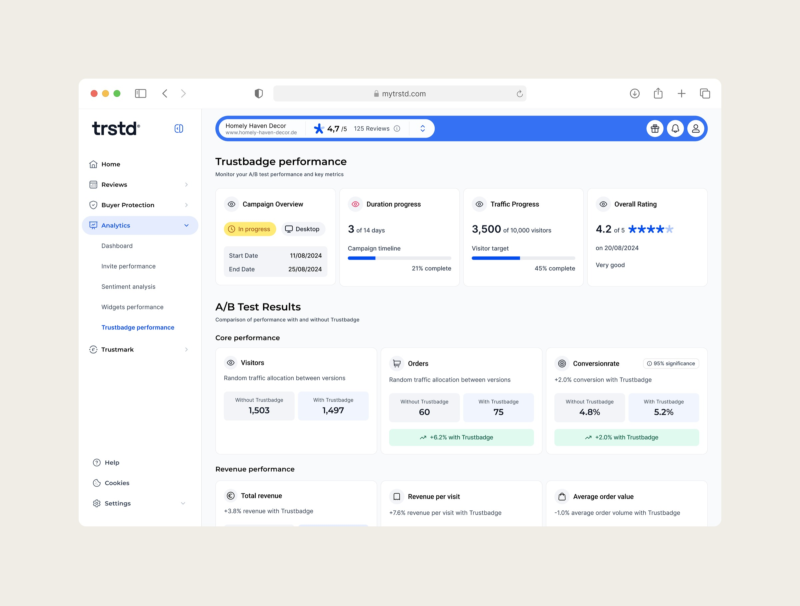
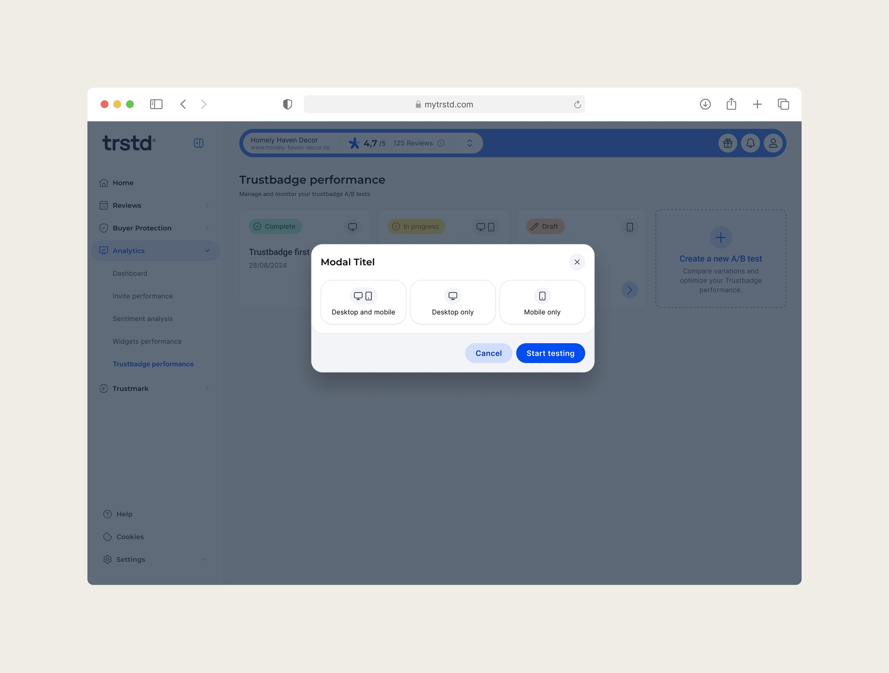
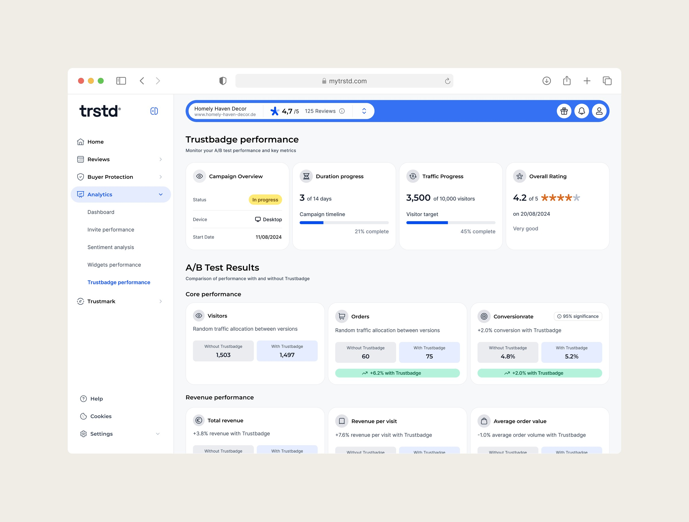
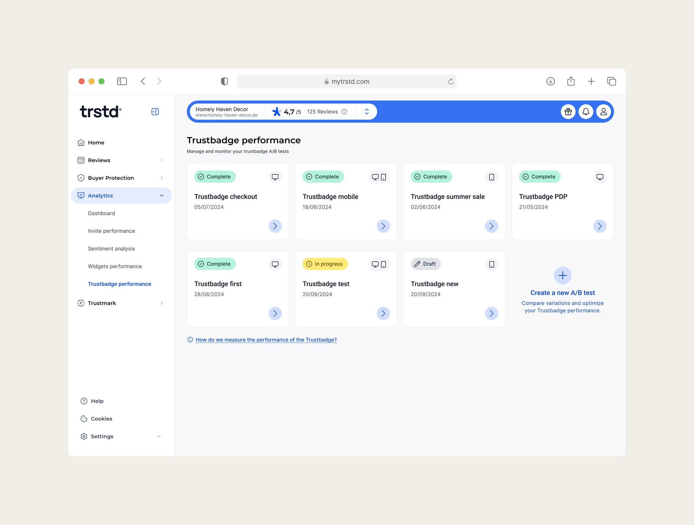
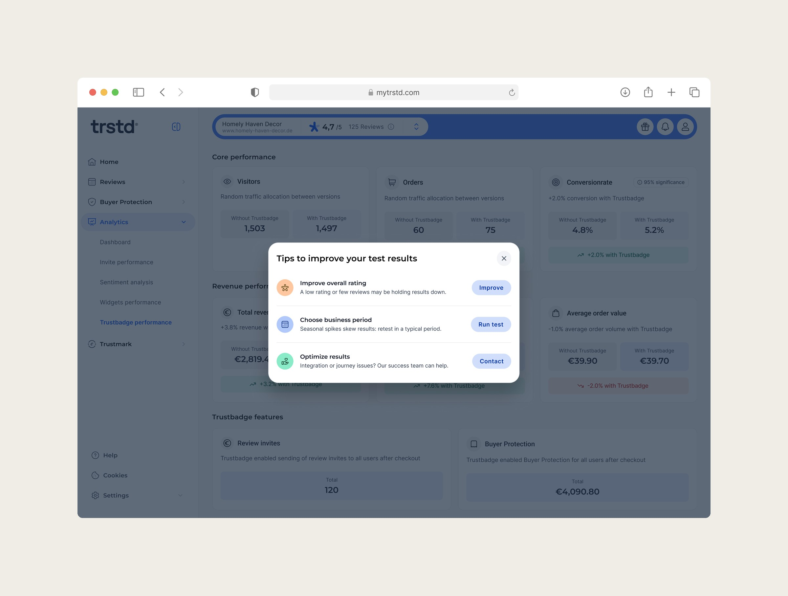

Proof, not promises: the A/B test feature that keeps merchants from leaving
The Trustbadge is one of Trusted Shops' most visible products – yet merchants questioned its real business impact, relying on inconsistent self-run tests. We designed an A/B testing feature in the Control Center that measures the Trustbadge's effect on conversion, revenue and customer behaviour – reliably enough to settle the argument.
- Role
- Product Designer
- Team
- PM, engineers, customer success
- Timeline
- 2024
- Platform
- Web · Control Center

60+
Shops ran an A/B test in the first three months – double the six-month target
65%
Churn-risk customers decided to stay after running a test
78%
Rated the feature easy to use with the data they needed
Problem
Customers were testing our product against us – badly
Within a short period, multiple clients came to us with their own A/B test results and used them to justify switching the Trustbadge off, or cancelling contracts altogether. Account managers raised "lack of proof" again and again in churn conversations – and had no data to counter with. Trusted Shops had no standardized way to validate or challenge customer-led tests.
We knew from close customer collaborations and consumer surveys that the Trustbadge can have a positive impact when tested properly. The real challenge wasn't the value itself – it was proving it in a reliable, repeatable way.
How might we give shops a simple and trustworthy way to measure the Trustbadge's impact so they can see its real value?
Research
Why the self-run tests kept coming back negative
I pulled evidence from churn conversations, an analysis of how customers actually ran their tests, and a segment-by-segment look at what "success" means for different merchants.
📈 The business signal
Clients used their own "no uplift" results as a reason to cancel. For a product that promises trust and sales, this was a direct threat to retention and revenue.
🔍 The tests were flawed
Too short for statistical significance; conversion-only, ignoring revenue, basket size and reviews; distorted by seasonal sales and parallel experiments; inconsistent integrations that hurt performance.
🧩 Segments define success differently
ROI-driven Tech Touch clients churned fastest on unclear impact. Mid and Large clients with strong brand and SEO rarely see pure conversion uplift – revenue per visit, basket size and review volume matter more.
🧭 The conclusion
The Trustbadge created value, but flawed customer tests overrepresented negative outcomes. The feature had to standardize testing – and reflect different definitions of success.
Success
Success for the feature, not just for the badge
Proving the Trustbadge works for individual shops wasn't enough – the A/B testing feature itself had to create value for Trusted Shops. We committed to three targets up front.
Adoption
At least 50 tests started per month within the first 6 months after launch
Retention
At least 60% of churn-risk clients convinced to stay after running a test
Satisfaction
At least 70% of customers rating the feature useful and easy to understand
Design
Deliberate limits instead of maximum flexibility
I benchmarked how Optimizely, AB Tasty and Kameleoon present experiment results – and found the source of the problem. These tools give users a lot of flexibility, and with it a lot of responsibility: results show early, metrics compete for attention, statistical concepts go unexplained. That's exactly how our customers were drawing strong conclusions from misleading data.
So together with the PM we focused the results page on business decisions, not statistics: visitors and orders (transparent test setup), conversion rate as the primary signal, revenue and revenue per visit, average order value, and Buyer Protection and review opt-ins as trust outcomes. Every metric is shown with and without the Trustbadge, as absolute values plus a clear uplift or decline.
Four principles guided every design decision:
01
Simple. Understandable at a glance: clear with/without comparisons, no raw tables or complex charts.
02
Credible. Results appear only once statistical significance is reached – no premature conclusions, numbers that hold up in customer conversations.
03
Actionable. Every metric carries a clear visual signal: positive or negative, and what it means for the business.
04
Transparent. Neutral or negative results come with possible explanations – low ratings, integration issues, seasonality – instead of leaving users guessing.


Rollout
Rollout as part of the design
Test results could directly influence churn decisions, so how and when customers saw them mattered as much as the UI. We started small: CSMs ran tests manually for a limited set of customers and shared results in real conversations – showing us not just whether the tests worked, but how customers reacted to the numbers.
Then a closed beta inside the Control Center: results lived in the product but were still released by CSMs, giving us room to refine the UX and content before opening the feature more widely.

Outcome
Every target beaten – and a new sales argument
Within the first three months, over 60 shops ran at least one A/B test (the target was 50 per month by month six). 65% of churn-risk customers stayed after running a test, against a 60% target. 78% of users said the feature was easy to use and gave them the data they needed, against a 70% target.
The impact reached beyond retention: marketing started using real A/B test results as case studies, and sales teams used them as proof points in acquisition.
Instead of giving users more control and more numbers, we deliberately added limits – hiding partial results, focusing on a small set of metrics, guiding interpretation. That restraint turned out to be more valuable than flexibility.
Data doesn't speak for itself. How results are framed can change real business decisions.

Next project